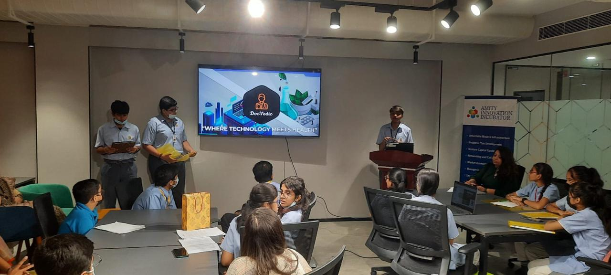

Project Goal: To design, build, and deploy advanced autonomous unmanned aerial vehicles (UAVs) as a core member of Delhi Technological University's official team, UAS-DTU.
My Role & Contributions: As a Software Technician, I am responsible for developing the "brains" of the autonomous drones. My work is focused on:
Implementing Computer Vision (CV) algorithms to allow the drone to "see" and interpret its environment for real-time object detection, tracking, and obstacle avoidance.
Developing and integrating Artificial Intelligence (AI) and Machine Learning (ML) models to enable fully autonomous navigation, pathfinding, and decision-making without human intervention.
Programming and field-testing the drone's perception and control systems to ensure mission-critical reliability and performance.

DOCVEDIC - AI-Powered Smart Doctor
Project Mission: To tackle the critical gap in primary medical facilities worldwide by creating an accessible, AI-driven platform for preliminary diagnostics and health information.
My Role: I was the project lead and architect. I conceptualized the solution, developed the core machine learning models for diagnosis, and built the platform's framework. I also served as the primary presenter, pitching the project at multiple national-level innovation competitions..
Core Technologies: Python, Machine Learning (ML), Artificial Intelligence (AI), Biotechnology principles, and Data Analysis.
Key Recognition & Impact: This project was celebrated for its potential impact and innovation, earning:
Grand Finalist at the Smart India Hackathon (SIH) 2022
National Winner Recognition at the ATL Marathon
Official Recognition at the ATL Smart Hackathon
Robotics Category Winner in Young Scientist India
Melody Fusion (Original Music & Production)
Project Goal: "Melody Fusion" is my personal music project and artist identity, dedicated to composing, producing, and sharing original music. It serves as my creative outlet to blend diverse genres, from modern electronic to classical piano and Indian classical influences.
My Role: I am the sole artist, composer, and producer. I manage the entire creative process, from the initial composition and arrangement to the final recording, mixing, mastering, and distribution.
Skills & Platforms:
Creative: Music Production, Composition, Audio Engineering
Instruments: Certified Pianist (Trinity College London), Certified Indian Classical Musician (Harmonium), Synthesizer
Distribution: Official artist releases on Spotify, Apple Music, and YouTube.
Key Outcome: This project demonstrates my ability to manage a long-term, self-driven creative endeavor from concept to a professional, public-facing product. It is a portfolio of my technical and artistic skills in the world of music.
About Me
Hello, and welcome to my portfolio.
I’m Tanmay Goyal, a Computer Science Engineering student at Delhi Technological University (DTU).
My guiding philosophy is that innovation doesn't happen in a silo. The best solutions are born at the intersection of disciplines—where technology meets creativity, and analytics meets artistry. I've built my journey around this belief, diving deep into the worlds of artificial intelligence, quantitative finance, and music production.
🤖 The Technologist & Innovator
My core focus is on Artificial Intelligence, Machine Learning, and Autonomous Systems. I don't just want to study theory; I want to build.
At DTU, I'm actively involved in several high-impact technical teams:
As a Software Technician at UAS-DTU, I develop AI, computer vision, and autonomous navigation systems for drones.
At AIMS-DTU, I explore the cutting edge of AI, from deep learning models to generative AI.
My work with Team Defianz Racing as an Autonomous Department Recruit gave me hands-on experience with the Robot Operating System (ROS) and the challenge of building self-driving vehicles.
This passion for building impactful solutions started long before university. For over five years, I was an active member of the NITI Aayog and Atal Innovation Mission (ATL) ecosystem. I’ve led multiple startup projects, pitching and presenting concepts at national-level events. My flagship project, "DOCVEDIC," is an AI-based smart doctor, a concept recognized at the ATL Marathon, Young Scientist India, and as a Grand Finalist at the Smart India Hackathon (SIH) 2022.
📈 The Quantitative Analyst
My analytical drive extends beyond code and into the complex world of finance. I am fascinated by the patterns, strategies, and quantitative models that drive markets.
This passion culminated in my role as a Research Analyst and Innovation Head for our team in the Wharton Global Youth Program Investment Competition. This wasn't just a competition; it was an 11-month deep dive into fundamental analysis, technical strategy, and algorithm design.
I developed new tools for client analysis and portfolio allocation, including:
Bearish Bullish Calculator (BBC): An AI-based predictor for short-term stock movements.
Orionis Pricing Model: A flagship asset allocation model to optimize portfolios based on client risk and goals.
This fusion of AI, mathematics, and investment strategy was incredibly rewarding. I am immensely proud to have led my team to become Semifinalists, placing us among the Top 50 teams globally in this prestigious competition.
🎹 The Creative
Beyond the keyboard of my laptop, I am equally at home on the keyboard of a piano. Music is not just a hobby; it’s a core part of my identity and a discipline I’ve pursued for years.
I am a certified Pianist, having formally passed my examinations from the prestigious Trinity College London. My musical foundation is also rooted in Indian traditions, as a Certified Classical Music Player from Prayag Sangeet Samiti.
This passion for performance naturally evolved into creation. I am a Music Producer, with my original work officially released on major platforms like Spotify, Apple Music, and YouTube. This artistic pursuit has taught me the power of discipline, the structure of composition, and the nuance of creative expression—principles I apply to my technical projects every day.